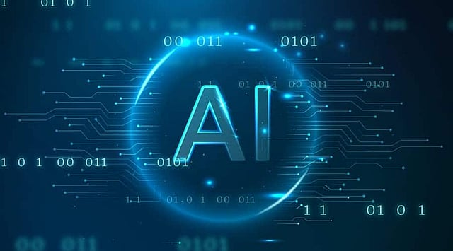
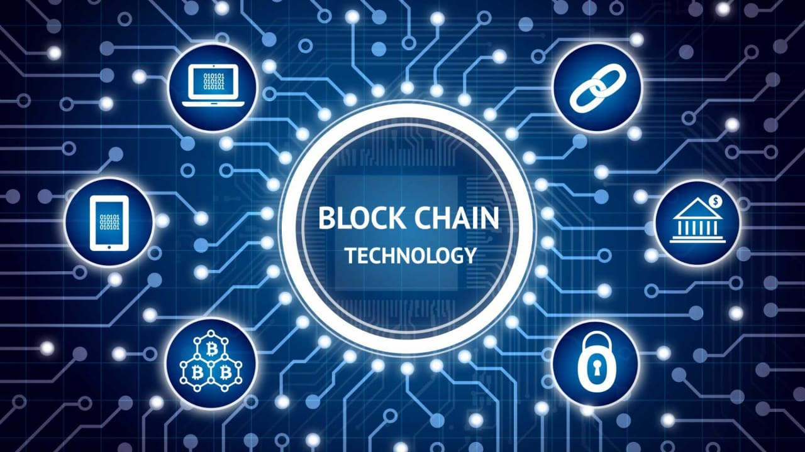
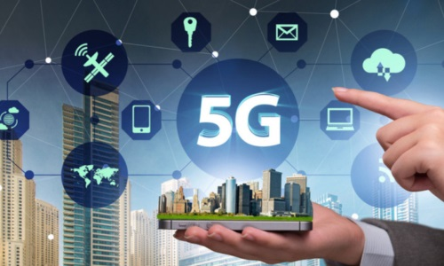

Artificial Intelligence (AI)
Artificial Intelligence (AI) is revolutionizing the tech industry. AI systems are capable of performing tasks that typically require human intelligence, such as image recognition, decision-making, language translation, and more. Machine learning, a subset of AI, allows systems to learn from data and improve over time.
Blockchain
Blockchain is a decentralized and distributed ledger technology that ensures secure and transparent transactions. It's most commonly known for its use in cryptocurrencies like Bitcoin, but it is also being used in supply chain management, healthcare, and various other sectors.
Internet of Things (IoT)

The Internet of Things (IoT) refers to the network of physical objects that are connected to the internet, allowing them to send and receive data. Smart homes, wearable technology, and autonomous vehicles are all examples of IoT applications.
5G Technology
5G is the fifth generation of mobile network technology, offering faster speeds, lower latency, and greater connectivity. It is set to enhance the performance of devices that rely on the internet, from smartphones to smart cities.